El HC-05 está conectado al PC por un adaptador USB-serial en COM17, y el COMPIM de Proteus usa ese mismo puerto.
En la app pulsa Conectar, elige el módulo y conecta. Luego abre un panel en modo edición.
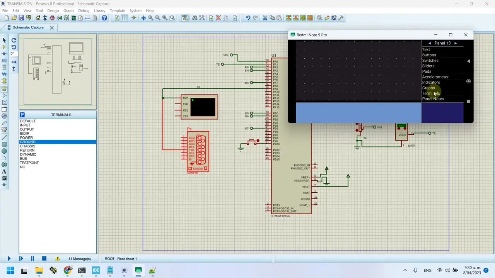
Es la versión celular de la clase 43. El micro (en Proteus) transmite por el HC-05 en COM17 y la app Bluetooth Electronics recibe. A diferencia de LabVIEW, la app define el formato: un '*', una letra de recepción, el valor y otro '*'. Se agrega un termómetro (letra T), un medidor de voltaje (letra V) y un LED RGB (letra L). Después de cada envío se espera 5 ms porque el celular es más lento que el PC.
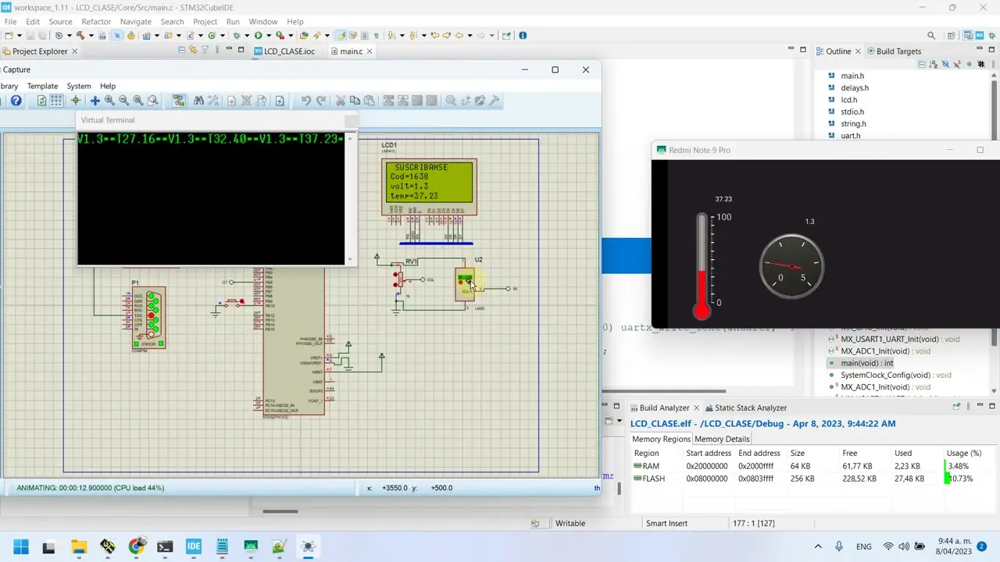
El HC-05 está conectado al PC por un adaptador USB-serial en COM17, y el COMPIM de Proteus usa ese mismo puerto.
En la app pulsa Conectar, elige el módulo y conecta. Luego abre un panel en modo edición.

Agrega un indicador tipo termómetro y un texto encima para ver el número. A los dos ponles el mismo Receive Character: T.
En el rango pon mínimo 0 y máximo 100; también puedes elegir divisiones y textos.
La app solo muestra el dato si llega como * + letra + valor + *. Ya no puedes inventar la trama como en LabVIEW.
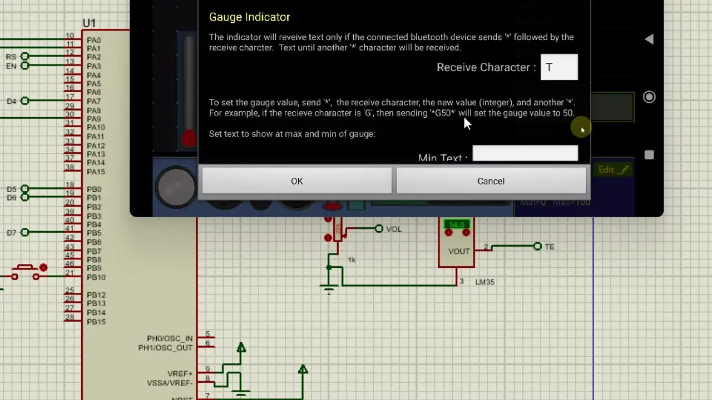
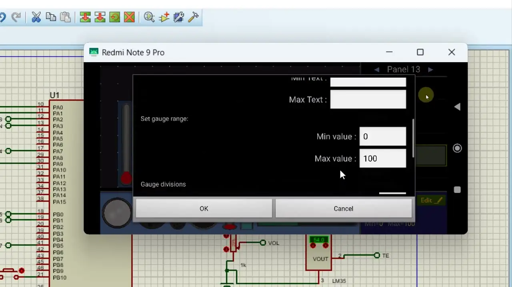
Cambia la impresión de la temperatura al formato de la app y espera 5 ms después de enviar.
sprintf(texto, "*T%.2f*", temperatura);
uartx_write_text(&huart1, texto);
HAL_Delay(5);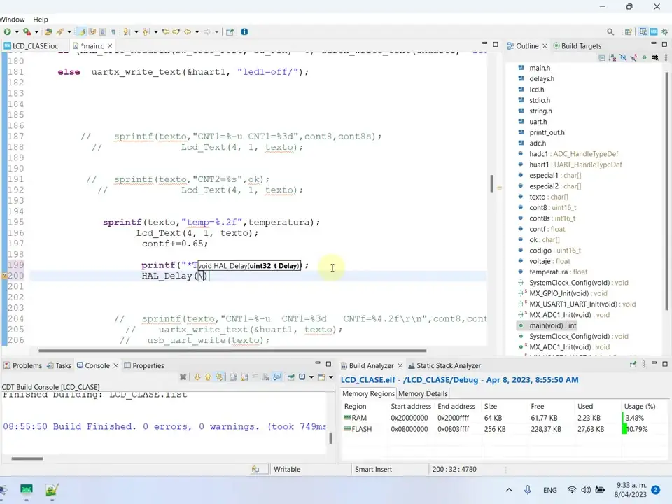
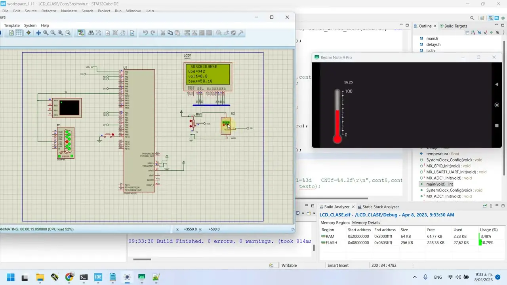
Agrega un medidor (meter) y un texto con Receive Character V. Rango de 0 a 5 con 5 divisiones.
sprintf(texto, "*V%.1f*", voltaje);
uartx_write_text(&huart1, texto);
HAL_Delay(5);En el video, con printf directo la simulación se trababa y no llegaba nada. La solución fue armar el texto con sprintf y enviarlo con la función de la UART, más el retardo de 5 ms.
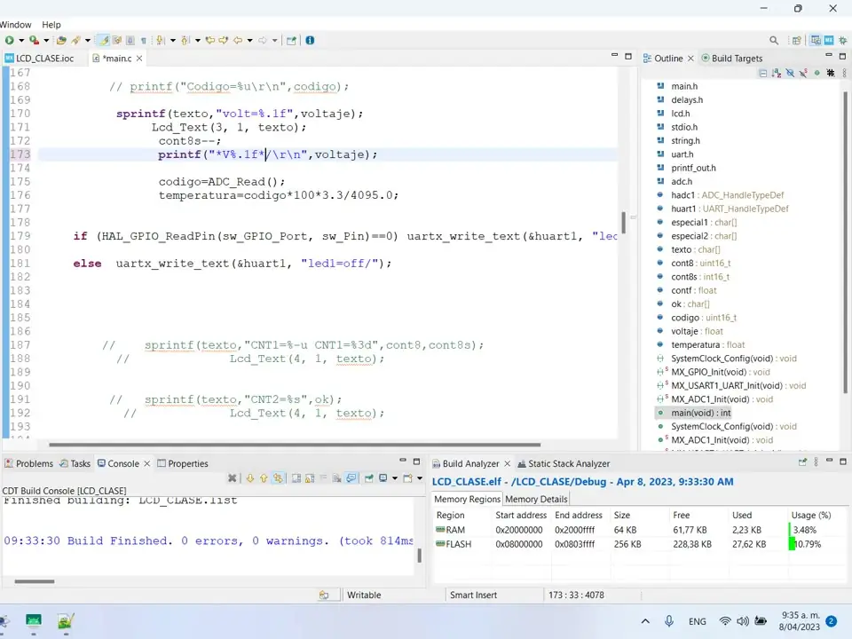
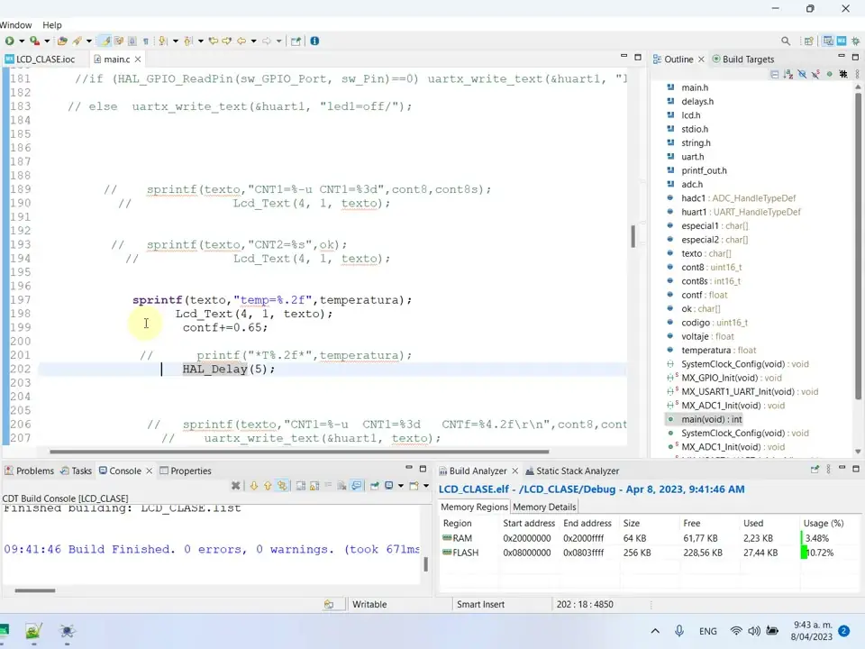
Agrega un LED con Receive Character L. El color se envía como *LRrojoGverdeBazul*, con valores de 0 a 255.
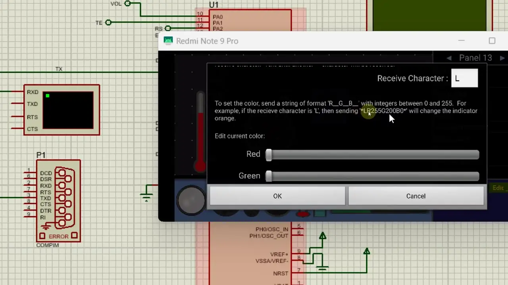
if (HAL_GPIO_ReadPin(sw_GPIO_Port, sw_Pin) == 0)
uartx_write_text(&huart1, "*LR255G0B0*"); // rojo
else
uartx_write_text(&huart1, "*LR0G0B0*"); // negro (apagado)
HAL_Delay(5);Al presionar el pulsador el LED del celular se pone rojo y al soltarlo se pone negro. Sigue siendo comunicación en un solo sentido; más adelante se hace en ambos sentidos con interrupciones.
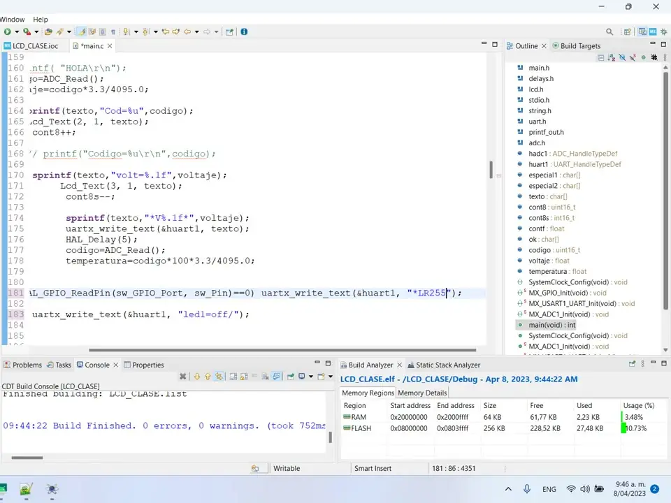
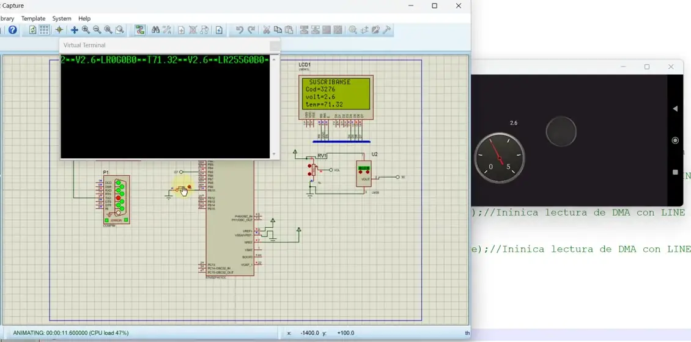